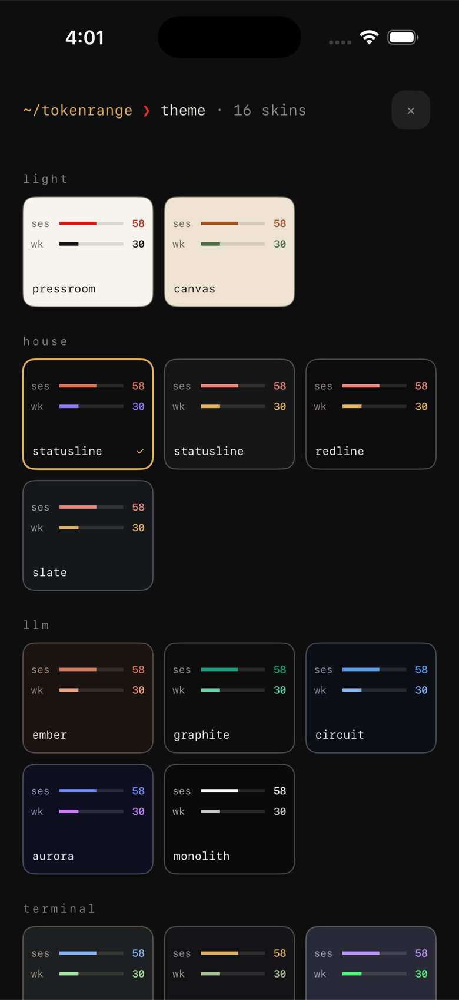

~/tokenrange ❯ limits
glance. don't open.
Session windows, weekly caps, reset countdowns: pulled live from the tools you already use and shown the way a terminal would show them. This isn't a mockup; the bars below are the real dashboard language.
~/tokenrange ❯ widgets
know before you hit the wall.
Home Screen widgets in three sizes and a Lock Screen complication, all reading the same numbers as the dashboard.
- ❯Lock Screen complications show your tightest limit and its reset timer without unlocking your phone.
- ❯Limit alerts speak at 50%, 25%, 10% and 5% left — one notification, reset time included — then again fifteen minutes before a spent limit comes back.
~/tokenrange ❯ theme
every skin, one tap.
Sixteen terminal colorschemes, and the whole surface changes with them, light ones included. Watch one provider card wear every skin, then settle back on statusline. Each one passes WCAG AA contrast.

~/tokenrange ❯ privacy
your accounts stay yours.
Sign in to each tool once, with your own account. Tokens refresh silently after that, and everything stays on your iPhone or Mac. Credentials live in your device Keychain and go only to the provider you connected, over HTTPS. Never to a Token Range server, because there isn't one. No account. No analytics.
~/tokenrange ❯ faq
questions, answered straight.
How do I check my Claude Code rate limit on iPhone or Mac?
Install Token Range and sign in to Claude once on each device. Your session and weekly limits appear in the iPhone app and widgets or from the Mac menu bar, with reset countdowns.
Does Token Range see my credentials or usage data?
No. Credentials live in your device Keychain and are sent only to the provider you connected, over HTTPS. There is no Token Range server, no analytics, and no account to create.
Which AI coding tools are supported?
Claude Code, Codex, Cursor, Grok, and Antigravity at launch, with more tools on the way. One connected account is free; Lifetime Pro unlocks additional accounts.
How much does it cost?
One connected account and every widget are free, forever. Lifetime Pro is one purchase: additional accounts and every theme. Apple shows the current local price. No subscription.
~/tokenrange ❯ install
ready for your limits.
One connected account and every widget are free, forever. Lifetime Pro unlocks additional accounts and every theme with one purchase. Apple shows the current local price.